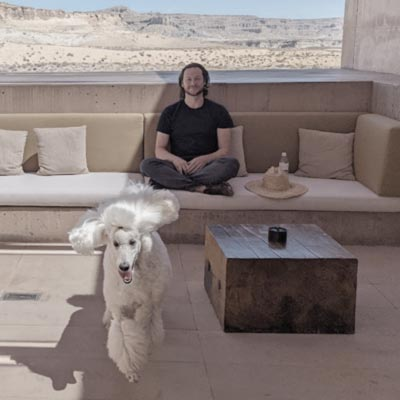

Neil LeDoux is a contemporary painter celebrated for his evocative explorations of perception and memory.
Born in 1976 in Louisiana, he received his BFA and MFA in Painting from the California College of the Arts in San Francisco. He now resides in California where he now teaches advanced studio courses.
Selected Exhibitions
-
2013
“Overturn the Artifice” · SOMArts, San Francisco, CA -
2011
“Ten Revolutions Around the Sun” · Headlands Center for the Arts, Sausalito, CA
“People of Earth” · Luggage Store Gallery, San Francisco, CA
“National Drawing Invitational” · McNeese State University, Lake Charles, LA -
2010
“Lost” · Right Window at ATA, San Francisco, CA
“Whistle While You Dixie” · Summer BF Press HQ, San Francisco, CA -
2009
“The Exhibition Formerly Known as Passengers” · Wattis Institute for Contemporary Arts, San Francisco, CA
“The Fountain of Giant Teardrops” · Silverman Gallery, San Francisco, CA
Press
- Artpractica — Mark Van Proyen, “Overturn the Artifice,” 2013
- SF Gate — Kenneth Baker, “Bright's Eccentricity, Crosby's Marginality,” 2012
- SFMOMA Open Space — Cedar Sigo, “The Lanterns Along the Wall,” 2009
- Art in America — Melissa Feldman, “Exhibition Reviews,” 2009
- KQED Arts — Victoria Gannon, “The Fountain of Giant Teardrops,” 2009
- San Francisco Chronicle — Kenneth Baker, “Light in the Forest,” 2009
Awards & Residencies
-
Tournesol Award
Headlands Center for the Arts — Sausalito, CA · 2011 -
Brooks Fellowship for Established Artist
Anderson Ranch Arts Center — Snowmass Village, CO · 2009